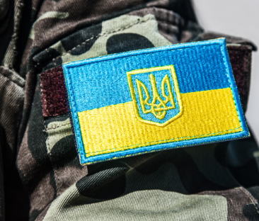

"Права ветеранів" - проект з безоплатної юридичної та правової допомоги
На цьому сайті ви можете знайти достатньо необхідної інформації:законів, підзаконних актів, постанов, указів - що регулюють правові основи взаємодії ветеранського суспільства з державою.
Про нас
"Допомага ветеранам" - ініціатива спільної дії ГО "Спілка ветеранів АТО" та Українського Ветеранського Фонду, разом з підтримкою ГО "Дружини ветеранів" та адвокатського бюро "Керімов та партнери", з метою надання безкоштовної юридичної та правової допомоги.
Місія проекту
Фаховий захист прав ветеранів - як в умовах війни, так і післявоєнного часу. В рамках проекту у 2023 році юридична та правова допомога надається ветеранам, членам їх сімей, членам сімей загиблих, військовослужбовцям.
Юридична допомога
«Права ветеранів» - проект з безоплатної юридичної допомоги ветеранам, військовослужбовцям, членам їх родин, членам родин загиблих, який реалізується ГО «Спілка ветеранів АТО» за підтримки Українського Ветеранського Фонду при участі ГО «Дружини ветеранів».
За нашої допомоги Ви можете отримати фахові відповіді на найчастіші, «найгарячіші» питання та знайти шляхи розв'язання проблематики наших воїнів та їх близьких, а саме:
Оформлення УБД
Консультації з питань захворювань, поранень та відповідного оформлення
Нарахування бойових, відпускних, військових пенсій
Оформлення документів при загибелі військовослужбовця, отримання виплат
Порядок надання відпусток по сімейним обставинам, у зв’язку з хворобою або для лікування після тяжкого поранення
Складнощі при проходженні ВЛК та МСЕК
Захист прав ветеранів, військовослужбовців
Та багато інших
Консультації надаються досвідченими правозахисниками та юристами-ветеранами на постійній основі за умовами попередньої реєстрації:
вживу, в офісі ГО “Спілка ветеранів АТО” (Харків, Держпром, 6 під'їзд, 1 поверх, офіс 19).
онлайн – за допомогою месенджерів (Ватсап, Зум, Телеграм).